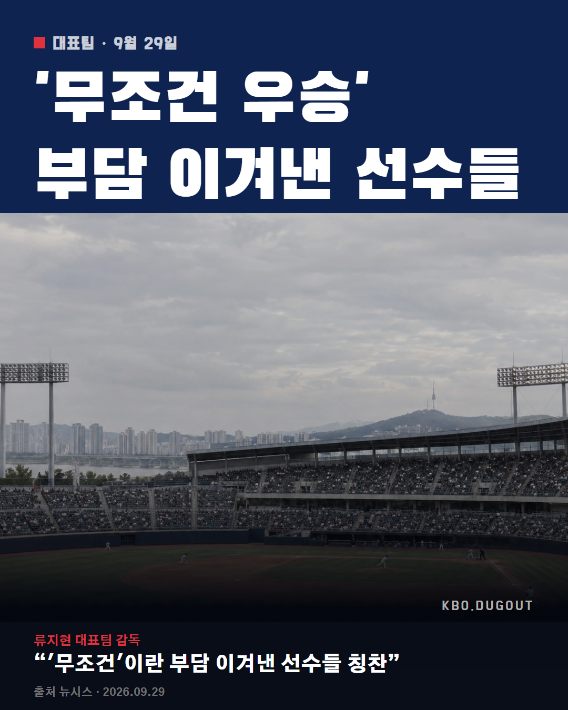

대표팀 아시안게임 5연패에 노시환은 항저우 이어 2연속 금메달인데 이 정도면 그냥 국가대표 상비군 각 아님?
QA 출처에 없는 이름
대표팀 아시안게임 5연패에 노시환은 항저우 이어 2연속 금메달인데 이 정도면 그냥 국가대표 상비군 각 아님?
QA 출처에 없는 이름

대표팀이 일본 꺾고 5연패 확정, 류지현 감독 WBC 8강 이어 이번 대회까지 커리어 제대로 채웠네 #KBO #프로야구 #야구 #류지현 #한화이글스
QA 없음
대표팀 이번 대회 요약 - 대만 5-0, 홍콩 13-0, 태국 18-1 - 사회인 야구 일본한테 0-5 충격패 - 중국 9-2로 잡고 결승 진출 - 결승서 일본 3-1로 꺾고 금 5연패 그냥 지나칠 기록 아니지 않아
QA 너무 김, 출처에 없는 이름